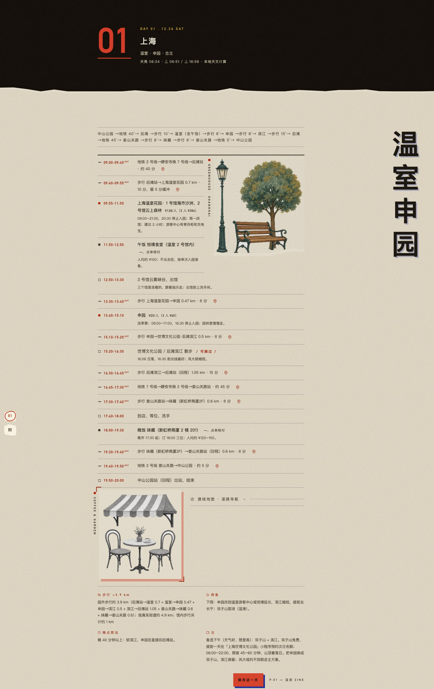

专题 · 把一次出门安排明白 · 第 3 讲 · 共同
AI 做成网页，你检查保存
让 AI 用 zine 模板渲染网页，连同 KML 和 ICS 交回；你打开检查封面、一天和「注」卡，再保存三样。
第三轮：你说做成网页；AI 选 zine 模板渲染；你检查、保存、分享。到这一步，行程内容已经定了，网页只是把它变成家人能打开的一页。
这一讲谁做什么
| 谁 | 这一步做什么 | 交回什么 |
|---|---|---|
| 你 | 说做成网页；打开检查；保存三样；决定发给谁 | 网页、KML、ICS |
| AI（DeepSeek） | 选 zine 模板、渲染、跑检查、导出 KML 和 ICS | 三个文件 |
| 插件（脚本） | 渲染和页面检查；不发布、不替你发给家人 | — |
1. 你发第三段 prompt
提示词
行程确认。请做成网页，用 zine 模板，中文。
页面里要有：封面、一天的时间线、每段地图链接、行前清单、雨天和晚点方案，
以及下午备选的「注」卡。
生成后告诉我文件在哪里，并一起给我离线地图（KML）和日历提醒（ICS）。
做好后先自己检查有没有空白、占位文字或打不开的链接，再让我打开看。
2. AI 在做：渲染 zine、出三个文件
AI 在做：用 zine 模板渲染；把备选下午写进「注」卡；跑页面检查；导出 KML 和 ICS。
它不做的：不发布到网上、不替你发给家人、不预订。
它交回：一个网页、一个 KML、一个 ICS。
3. 你打开检查三处
- 封面：日期、起点、路线能不能一眼读完。
- 一天：每段的时间和交通对不对；点两三个地图链接，看是否落在正确的地点。
- 注卡：下午的备选（双子山 + 滨江）在不在，写没写清预约和体力。

再用手机宽度看一遍：字有没有被切掉，按钮能不能点。zine 的竖排标题和贴纸在窄屏上会重新排，别只看电脑。

4. 你保存三样东西
| 文件 | 用途 | 怎么用 |
|---|---|---|
网页（.html） |
发给家人，手机浏览器直接打开 | 单独一个文件，不依赖网络；也可以先生成长图 |
离线地图（.kml） |
把当天所有点导入地图 App | 高德、百度或 Organic Maps 导入收藏点，信号差时备用 |
日历提醒（.ics） |
预约、订位、出发前复核 | 双击导入日历，提醒按日期出现 |
案例的三样文件都在这里：
自己的真实行程放在本机一个固定文件夹，不推到公开仓库；课程里的案例才放在 assets/topics/trip-planning/examples/。
5. 三条复盘
- 哪里估错了：案例初稿按 5 公里排，实际园外 3.9 公里、街道 4.9 公里，所以滨江留成可砍的一段。
- 出发前还要再查什么：温室有没有临时闭馆，味藏订位是否确认，双子山还约不约得到。
- 下次少问什么：把“3 个人、人均 150、等位 15 分钟、午饭在馆内”写进条件卡，下次直接复用。
- 用 zine 模板生成了网页，三处都打开看过。
- 手机上又看了一遍，竖排标题和注卡没有被切。
- 网页、KML 和 ICS 三样都保存好了。
- 真实行程放在本机目录，没有推到公开仓库。
- 写下了三条复盘。